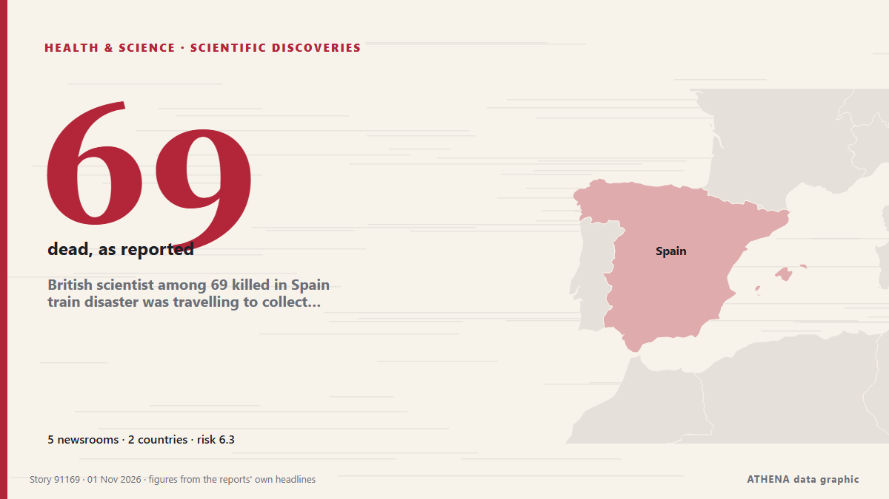

Υγεία, Επιστήμη & Έρευνα
Οι τίτλοι των ειδήσεων παρουσιάζονται στα αγγλικά, όπως δημοσιεύτηκαν.

Επιστημονικές ανακαλύψειςBritish scientist among 69 killed in Spain train disaster was travelling to collect prestigious award
University of Cambridge researcher Dr Marta Shahbazi was on board when two high-speed trains collided near Toledo. από The Independent
| 19 Οκτ | 41 |
|---|---|
| 20 Οκτ | 19 |
| 21 Οκτ | 40 |
| 22 Οκτ | 81 |
| 23 Οκτ | 76 |
| 24 Οκτ | 36 |
| 25 Οκτ | 45 |
| 26 Οκτ | 83 |
| 27 Οκτ | 79 |
| 28 Οκτ | 76 |
| 29 Οκτ | 88 |
| 30 Οκτ | 77 |
| 31 Οκτ | 35 |
| 1 Νοε | 12 |
US inmate Christa Pike says she woke up 'confused and in pain' after failed execution
It is Pike's first public statement since she survived an execution attempt by lethal injection in September. από BBC News
Halloween chaos in Lancashire as three children arrested and one in hospital after illegal party
Over 200 children attended the party in Lancashire. από Manchester Evening News
Suspected Ebola cases in Adamawa negative – NCDC
The Nigeria Centre for Disease Control and Prevention (NCDC) has ruled out Ebola Virus Disease (EVD) in two individuals suspected of having the infection in Yola, Adamawa State, after two rounds of… από Daily Trust
Africa CDC Commits $1.5mn to Support Kenya’s Ebola Response
The commitment follows a meeting between Health Cabinet Secretary Aden Duale and Africa CDC Director-General Jean Kaseya in Nairobi, where Duale briefed the continental health agency on measures… από Capital FM Kenya
Mata Ayer assemblyman Wan Badariah dies at 50
KANGAR: Mata Ayer assemblyman Wan Badariah Wan Saad has died. από New Straits Times
Rare 4.1-billion-year-old Martian meteorite reveals clues to planet's ancient past
Scientists at the University of New Mexico have played a key role in identifying a rare, 4.1-billion-year-old Martian meteorite that provides new evidence that the red planet may have once had a… από Phys.org
Congo's Ebola deaths top 5,000 as fear of continent-wide spread mounts
Data from the Congolese Ministry of Health showed that the disease has killed 5,026 people out of 10,351 infected, at a nearly 50% lethality rate. από Stuff
South Africa beat Australia by 176 runs in third Test to win series
Join IOL Sport for comprehensive live coverage of the decisive third Test from Cape Town. από IOL
Three ONYX Hotels Win Green Tourism Awards, Bringing “ONYX for Planet” to Life in Chonburi
Amari Pattaya, OZO North Pattaya and Amari Bangsaen recognised for integrating responsible operations, local engagement and measurable sustainability outcomes BANGKOK, THAILAND – Media OutReach… από Laotian Times
Saudi Arabia suspends travel to Kenya, bans visas and entry over Ebola concerns
Riyadh: Saudi Arabia has suspended travel by its citizens to Kenya, halted the issuance of all types of visas to travellers arriving from the country and banned their entry into the Kingdom as part… από Gulf News
Asanko Gold organises health screening for residents in host communities
Over 300 residents of Asanko Gold Ghana Ltd’s host communities received free health screening as part of the company’s Cancer Awareness Month activities. από MyJoyOnline
Australia hammered by Harmer in Cape Town as South Africa take series 2-1
Chasing a target of 288, Australia were bowled out for 111 in the second session on the final day. από Times of India
ED arrests four more accused, including Myanmar national, in cross-border drug network
Chintuang was a Myanmar-based supplier of the 49.1 kg methamphetamine consignment seized in August 2025, while Lalrammuana was the main handler and Jabrul Haque its intended receiver at… από The Hindu
MBA student dies after jumping from Jaipur’s Poornima University building
The student, identified as a resident of Prem Nagar in Jaipur's Gurjar Ki Thadi area, was pursuing her second year of MBA. από Hindustan Times
Humanitarian mission from Oleshky arrives in Ukraine
A Ukrainian delegation that carried out a humanitarian mission to the temporarily occupied city of Oleshky, Kherson region, has returned to Ukrainian government-controlled territory. από Ukrinform (English)
SWAG joins breast cancer awareness campaign with free screening at UniMAC-IFT
By Tilda Acorlor More than 40 students and staff have undergone free breast cancer screening at the University of Media, Arts and Communication–Institute of Film and Television (UniMAC-IFT) as the… από GBC Ghana Online
Possible new dwarf planet identified orbiting beyond Pluto
WASHINGTON, Oct 28 - Scientists using a Chile-based telescope have identified an icy object orbiting beyond Pluto that may join our solar system's small roster of dwarf planets. από The Straits Times
Part of London's Oxford Street pedestrianised 'forever'
A stretch of London's iconic Oxford Street was made traffic-free "forever" from Monday, as pedestrians took over the country's most famous shopping street, absent of the capital's... από Oman Observer
Sarawak doubles Unimas medical intake to produce more local doctors
KUCHING: Sarawak will double the intake of new medical students at Universiti Malaysia Sarawak (UNIMAS) from 40 to 80 as part of efforts to produce more local doctors and address the state's shortage… από New Straits Times
Firework warning as data shows rise in number of people admitted to hospital
NHS England said there were 85 firework-related hospital admissions in England last November, up from 60 the year before. από Evening Standard (London)
DR Congo: MSF celebrates Ebola patient discharges in Ituri province
Dancing and singing erupted at an Ebola treatment centre in DR Congo as the last patients were discharged. από Euronews English
Belleville, Ont., police officer who thwarted synagogue attack released from hospital
The Belleville, Ont., police department says Const. από CBC News (alternative feed)
Mum of 3 ends up unconscious and in hospital while getting ready for Halloween
Jess was collecting sticks for Halloween when things went all wrong. από WalesOnline
Health insurance plan costs on Healthcare.gov to rise by double digits in 2027
Obamacare enrollees could see their health insurance premiums rise by double digits for a second year in a row, according to a report published Friday. από The Hill
Detainees drank urine, sweat in NSCDC Niger cell before 33 of them died – Report
The committee said detainees had no drinking water, while officers ignored warnings about overcrowding and the risk of suffocation. από Premium Times
Domestic abuse cases handled by community agencies remain elevated in 2025, with over half involving children
Child abuse continued to account for the largest share of low- and moderate-risk cases, with physical abuse being the most common type experienced, a Ministry of Social and Family Development report… από CNA (Channel NewsAsia)
Junior Chipolopolo crowned champions, as FAZ assures transition
This content is for members only. Visit the site and log in/register to read. από News Diggers
Autumn birds will visit your garden if 2 food items are placed outside in November
Robins and goldfinches may come into gardens if you put out the right food, following updated RSPB feeding advice. από WalesOnline
Glenn Phillips ton fuels New Zealand's 87-run demolition of India
New Zealand's Phillips hits sublime century in 87-run win over India. από Gulf News
Ghostly Cat’s Head Nebula Lurks Within Sight of NASA’s Hubble, Webb
Like a spectral form rising out of a cold mist, NASA’s Hubble and James Webb Space Telescopes have captured a hauntingly dynamic star-forming scene. από NASA news releases
Andy Burnham ‘open’ to calls for British formal apology for slavery
The Prime Minister expressed his personal ‘sorrow and regret’ for the suffering caused by the transatlantic slave trade. από Evening Standard (London)
Earliest Known Recordings of Louisiana Creole Language Rediscovered After 91 Years
An overlooked set of 1935 recordings of the Louisiana Creole language has been identified as the earliest known extended audio of its spoken form, offering a rare chance to hear how people in New… από Greek Reporter
AI can make appointment but doctor should make decision, Americans say in poll
Americans are split on whether AI improves patient health and are wary of its effect on the doctor-patient relationship, a new Pew survey finds. από Courthouse News